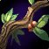
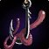

Dein deutscher WoW-Forever-Guide
Alle neun WoW-Forever-Klassen mit ausführlichen Levelguides, alle zwölf Berufe, Dungeonquests, Loot, Karten und Zonenrouten – in einer deutschen Website.
Original-WoW-Iconsdeutsche BegriffeForever-spezifischinteraktive Guides
Neu: Allianz Levelroute 1–60
Wähle dein Startgebiet und erhalte automatisch die passende Forever-Zonenroute bis Level 60.
Levelguide öffnen →Verfügbare Klassenguides
9 GuidesDruide · Feral
1–60 · Build · Talente · Rotation · Gear
Jäger · Survival
Talente · Gear · Build-Varianten · Rotation
Magier · Frost
1–60 · Build · Talente · Rotation · Gear
Paladin · Vergeltung
1–60 · Build · Talente · Rotation · Gear
Priester · Heilig
Talente · Gear · Build-Varianten · Rotation
Schurke · Kampf
1–60 · Build · Talente · Rotation · Gear
Schamane · Verstärkung
1–60 · Build · Talente · Rotation · Gear
Hexenmeister · Gebrechen
1–60 · Build · Talente · Rotation · Gear
Krieger · Waffen
Talente · Gear · Build-Varianten · Rotation
Verfügbare Berufsguides
12 GuidesLederverarbeitung
1–300 · Materialien · Lehrer · Muster
Schneiderei
1–225 getestet · Stoff · Lehrer
Verzauberkunst
1–300 · Entzaubern · Ruten
Schmiedekunst
1–225 getestet · Barren · Gear
Bergbau
1–300 · Farmrouten · Verhütten
Kürschnerei
1–300 · Farmspots · Leder
Alchemie
1–300 · Route · Materialien · Lehrer · Forever
Ingenieurskunst
1–300 · Route · Materialien · Lehrer · Forever

Kräuterkunde
1–300 · Route · Materialien · Lehrer · Forever
Kochkunst
1–300 · Route · Materialien · Lehrer · Forever
Erste Hilfe
1–300 · Route · Materialien · Lehrer · Forever

Angeln
1–300 · Route · Materialien · Lehrer · Forever